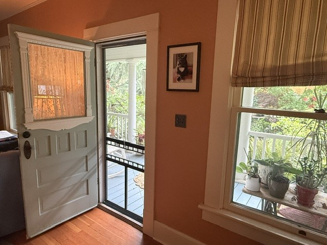

Everything below is answered plainly, with nothing overstated. Anything this doesn’t cover, bring to the call itself — that one’s free too.
BioGeometry® is an environmental science developed by Dr. Ibrahim Karim — an Egyptian architect and scientist — that works with the quality of energy in a space rather than against it. Using precise geometric shapes and configurations, it identifies and balances invisible stressors in your home: man-made electromagnetic fields, geopathic stress zones, and disturbances in the subtle energy environment. It’s research-backed, non-invasive, and it works whether or not you have a framework for understanding it.
Geopathic stress refers to natural disturbances in the earth’s energy field — caused by underground water streams, geological fault lines, and disruptions in the earth’s natural energy grid. These zones can intersect with living spaces in ways that affect sleep, mood, concentration, and general wellbeing over time. People often notice it as a room that consistently feels “off,” poor sleep tied to one specific spot in the house, or a houseplant that never seems to thrive in the same location no matter what changes — patterns worth paying attention to, not diagnoses in themselves.
The evidence is serious enough to warrant attention. In 2011, the World Health Organization’s International Agency for Research on Cancer classified radio-frequency electromagnetic fields as a possible human carcinogen — a classification currently under priority re-evaluation.
What BioGeometry® addresses isn’t the presence of EMFs, which are effectively unavoidable in modern life, but the quality of the energy environment around them. That distinction matters — because it shifts the question from “are EMFs dangerous?” to “what is this space doing to the people in it?”
It could be the whole household — a child who struggles to settle, a partner who can’t switch off, or simply a home where calm feels harder to find than it should.
No. Skepticism is welcome — and honestly, it’s a reasonable starting point. BioGeometry® operates on principles of energy quality that function independently of belief. The Swiss village studies that form part of the research base involved entire communities, including plenty of people who arrived doubtful. The results were documented regardless. Which means if something has been bothering you, that matters more than where you stand on the theory.
It begins with a free call — a conversation about what you’ve been noticing, the space, and how long you’ve been there. From there, Bobby visits in person, walks through the home, identifies areas of imbalance using calibrated BioGeometry® pendulums, and places precise geometric solutions. Two to three weeks later, he returns to verify the energy shift using the same tools. The full process is laid out step by step on the How It Works page.
Most people notice something within the first few days to weeks — better sleep, a room that finally feels right, a quiet but unmistakable sense that something has shifted. It tends to be subtle at first. Then you realize you’ve stopped noticing the thing that used to bother you. There’s often more to that than people expect — the Beyond page goes further.
Both. The assessment and solutions apply equally to apartments and houses. All solutions are small, precise, and entirely non-invasive — nothing is drilled, wired, or permanently altered. They can be removed just as easily as they were placed, which means renters never need landlord permission.
Yes — EVs, home chargers, and solar inverters all add their own electromagnetic signature to a property, and it’s become one of the more common questions people ask. The full picture, including the driveway visit option for vehicles, lives on the EMFs & Electro-Pollution page, since that’s where every source in and around the home gets covered together.
A home assessment is priced relative to the scope of what it addresses. This isn’t a surface-level inspection — it’s a thorough, hands-on process that can meaningfully change the quality of your daily life, your sleep, and the long-term health of your home environment.
Pricing is specific to your home and what you’re navigating, and depends on which starting point fits best — from the Introductory Consultation, which focuses on a single primary space (usually the bedroom), up through Essential and Essential PLUS for the full home. Every one of those starts the same way: a free call, with no obligation on either side, to decide together which starting point actually fits — and whether it’s the right fit at all.
The Introductory Consultation is $500. Essential starts at $1,200 and goes up from there, depending on the size of the home, the number of rooms, and the electromagnetic sources found. Essential PLUS is priced after the site visit.
No. BioGeometry® is not a form of medical diagnosis or treatment, and nothing on this site should be taken as medical advice. It is a research-supported environmental science, and all claims are based solely on the extent of current scientific research findings. If you have a health concern, please consult a qualified medical professional.
Still have a question not covered here? Ask it on a free call — the same no-obligation first step whether or not it ends up going any further.
Bring it to a free call — the same no-obligation first step no matter how much or how little follows it.
Book a Free Call